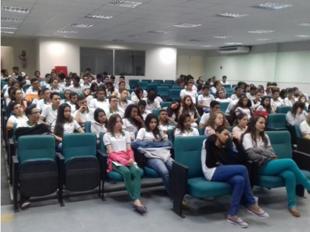
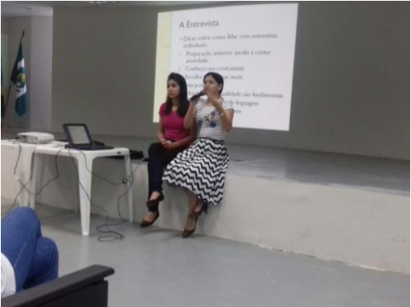

Oficina: Orientações para o Mercado de Trabalho

A Universidade Federal do Cariri (UFCA), por meio do Núcleo de Gestão de Pessoas (NUGEP),
promoveu no dia 02 de Agosto de 2017, no auditório da EEEP Padre João Bosco de Lima, a Oficina
intitulada “Orientações para o Mercado de Trabalho”, ministrada pela psicóloga Mônica Martins.

A oficina teve como objetivo principal elucidar aos jovens das turmas que iniciarão os estágios
profissionalizantes sobre o ingresso no mercado de trabalho, como também esclarecer dúvidas sobre
elaboração de currículo e entrevistas de emprego. O evento contou com participação de aproximadamente,
120 alunos do Ensino Médio, advindo de quatro turmas. Como resultado, aponta-se o esclarecimento das
dúvidas expressas pelos estudantes, como também a contribuição dos professores da escola no diálogo.